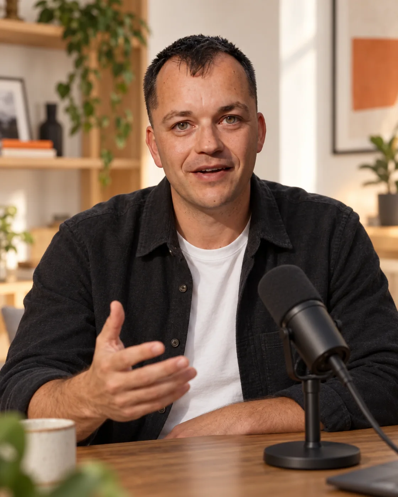

Обзор функции
Разберите одну задачу: собрать карту персонажа, придумать карусель или подготовить публикации. Покажите, как вы её решаете.
Идея: «Как я превращаю одну мысль в серию публикаций».
Рассказывайте об OWAI своим голосом. Покажите, как идея превращается в пост, карусель или ролик, — и предложите нам совместный проект.
Нам интересны ваш взгляд, умение рассказывать и желание пробовать новое.
Возьмите задачу из своей жизни или работы. Покажите процесс, результат и то, что заметили сами.
Разберите одну задачу: собрать карту персонажа, придумать карусель или подготовить публикации. Покажите, как вы её решаете.
Идея: «Как я превращаю одну мысль в серию публикаций».

02 / РАССКАЗАТЬРасскажите, что мешало вам вести блог и что вы попробовали с OWAI. Поделитесь своим опытом и выводами.
Идея: «О чём писать, если кажется, что всё уже сказано».
Придумайте новую сцену для своего персонажа, необычную обложку или короткую историю. Объясните, как появилась идея.
Идея: «Один персонаж. Три совершенно разных сюжета».
На изображениях — AI-персонажи OWAI. Сцены иллюстрируют варианты подачи.
Нам интересно, как OWAI вписывается в жизнь разных авторов. Предлагайте сюжеты, которые будут понятны вашей аудитории.
Обзор, история, эксперимент — предложите формат, в котором вам комфортно создавать.
Контент начинается с конкретного вопроса: что написать, как показать продукт или сохранить свой образ.
До работы обсудим задачу, сроки, использование материалов и вознаграждение.
Для начала достаточно ссылки на ваш профиль или портфолио и нескольких слов об идее.
Пришлите профиль и примеры работ. Напишите, какие темы и форматы вам близки.
Посмотрим, какую задачу OWAI можно раскрыть через ваш опыт и подачу.
Договоримся об объёме, сроках, площадках, доступе к продукту и вознаграждении.
После согласования переходите к работе. Покажите результат и обсудим дальнейшие проекты.
Пришлите свой профиль, даже если вы только начинаете. Расскажите, для кого создаёте контент, и покажите несколько работ — так будет проще обсудить подходящий формат.
Да, можно предложить запись экрана, разбор с закадровым голосом, карусель или историю с AI-персонажем. Главное — понятная идея и ваша подача.
Предложите площадку, на которой уже общаетесь со своей аудиторией: Instagram, TikTok, Telegram, YouTube, Threads, X или другую. Формат и место публикации согласуем вместе.
Вознаграждение и порядок оплаты обсуждаем индивидуально до начала работы. Они зависят от задачи, формата, объёма и условий использования материалов.
Можно начать со знакомства. Напишите, какую задачу хотите попробовать решить. Доступ к продукту и необходимые материалы обсудим вместе с условиями проекта.
Ссылку на профиль или портфолио, примеры контента и короткую идею. Если конкретного сюжета пока нет, расскажите о своей теме и аудитории.
Расскажите, кто вы, что создаёте и каким видите наш совместный проект.